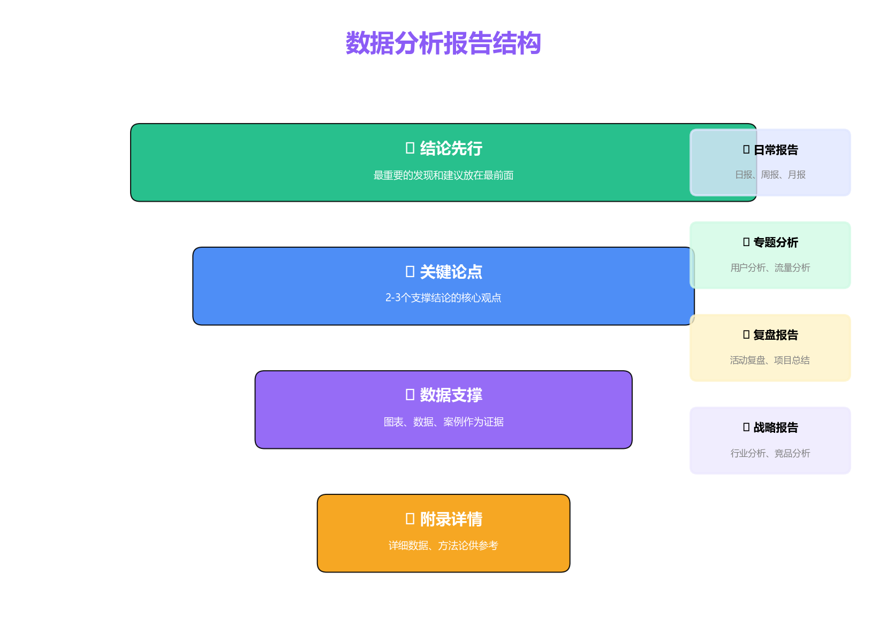
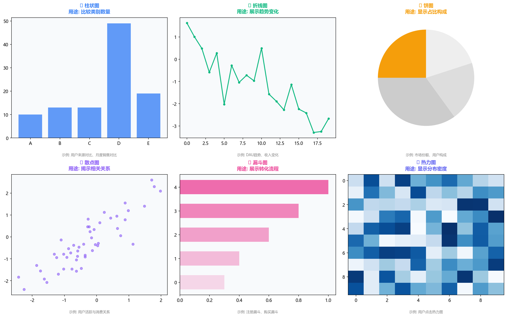
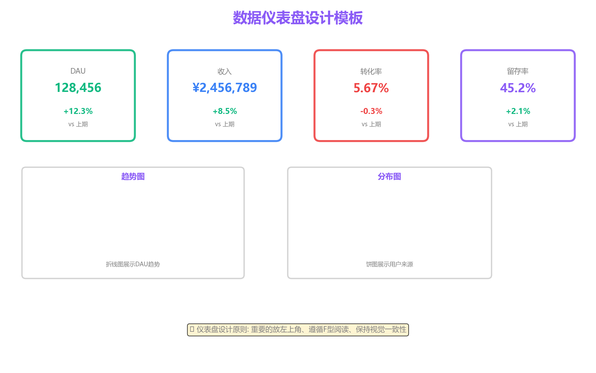
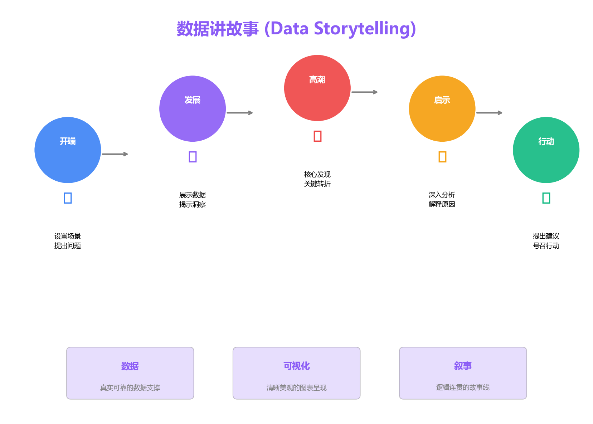
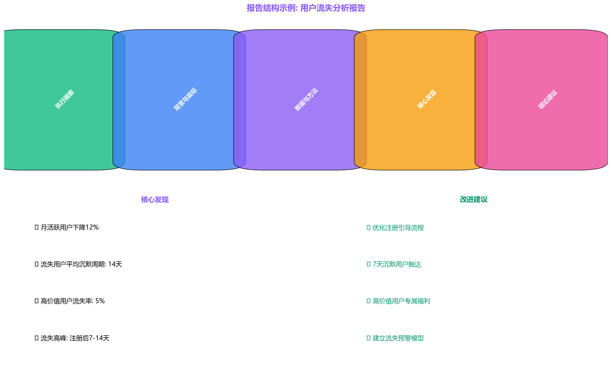
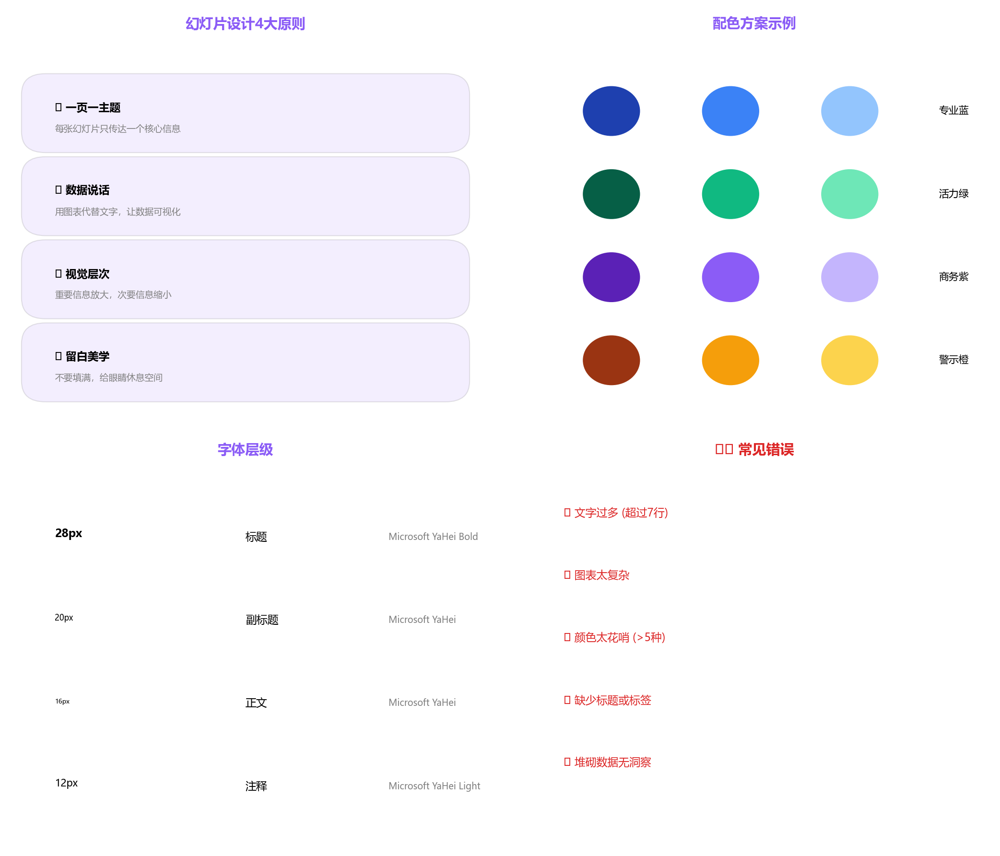
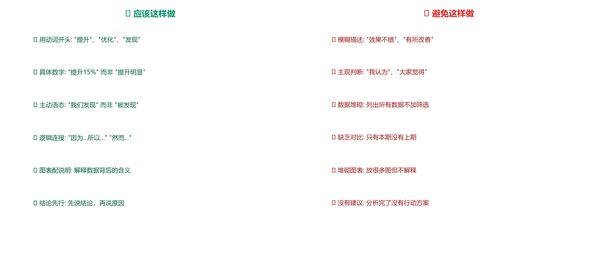
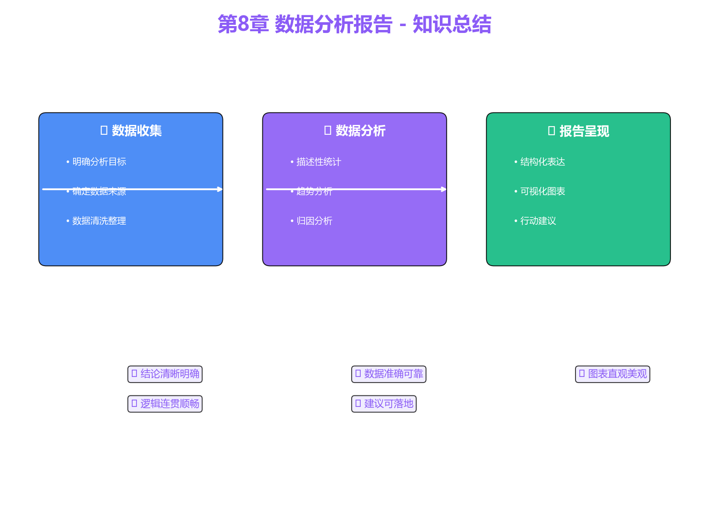

一份好的分析报告是将数据洞察转化为业务价值的桥梁，决定了分析工作的最终成效。

结论先行，让读者第一时间知道最重要的发现

不要用3D图表、不要截断坐标轴、不要用过多颜色


数据 + 可视化 + 叙事 = 有说服力的报告

1页执行摘要 + 3-5页详细内容 + 附录


背景(1分钟) → 核心发现(5分钟) → 建议(2分钟) → Q&A
快捷键 Alt+F1 快速插入图表
Ctrl+Shift+L 添加筛选器
Excel → Power BI/Tableau → Python可视化
提供具体数据和上下文，获得更准确的建议
核心发现3-5点、关键指标概览、主要建议
背景与目标 → 数据与方法 → 核心发现 → 深度分析
主要结论 → 行动建议 → 预期效果
详细数据、统计方法、补充说明

每份报告都当成作品来打磨
基于提供的用户数据，完成一份完整的分析报告：
了解分析师的职业发展路径和能力要求
感谢学习！
掌握报告撰写，让洞察产生价值